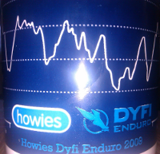
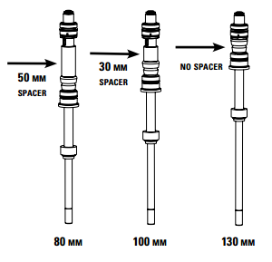
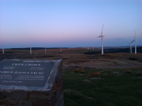

The new year has rolled round and so I'm once again going to attempt to take a photo a day.
I've tried this for the past 2 years and just failed so this year I'm going to attempt
to write a short blog post about each photo ...
The last time that I rode the mtb (prior to today) was the coedy enduro back in October.
That is seriously way too long to spend off the bike. This weekend Rich came over to Oxford to hang out
and we decided to ride somewhere. I still don't know ...

Dyfi enduro was yesterday so Ben and I decided that a bit of downhilling was in order,
had enough of riding uphill. We took the morning fairly easy and chilled before heading over
at around lunch time. We started out by hitting the top of the main line a couple ...
 It's taken me a while to get round to writing this, I know. I'm still somewhat unsure as to what I thought of the enduro, several times during the event I swore to both myself and Ben that I wouldn't be doing it again but...
It's taken me a while to get round to writing this, I know. I'm still somewhat unsure as to what I thought of the enduro, several times during the event I swore to both myself and Ben that I wouldn't be doing it again but...

This weekend marked the annual Dyfi Enduro event. A couple of the old abermtb group were coming
back for this and it was shipping up to be a good weekend of riding. Ben was, as usual, staying with
me and we arranged to meet Joe, Stu, Paul and Andy over ...

The Dyfi Enduro is 2 weeks today so today marked the dyfi pre-ride where a group of
us ride the potential route. Dan turned up at my truck at around 9am so we packed up
and got on the way, planning to arrive early so that I could change wheel ...
Today Dan, Gaz and I met up with the some of the locals to do some repairs
to a couple of the Dyfi enduro descents. We split into 2 groups and our group
went off to the top of the world cup descent to fill in a bit of a ...
This weekend I'm back on the farm and so we planned a ride over at Eastridge to do the XC loop.
It's worth mentioning at this point that Ben and I did a 50 mile road loop up to, around and back
from Lake Vyrnwy. It was pretty ...

The move is almost upon us and I decided that I wanted one last long ride. So I decided that for
old times sake a ride out was in order, no real plan - just ride up to nant and do whatever. Ben H asked if
he could tag along too ...

This week I've spent Wednesday-Friday flat/house hunting for a place to rent for
when we move down to Oxford. I had about 7 places lined up to go look at over the 2.5
days which increased to 9 whilst I was down there. Tuesday night I drove ...
Been a little while since I made any posts, about 3 weeks in fact - feels a lot longer I can tell you.
May as well start at the beginning - the move. Well, actually there's not a lot to say on that front,
it all went rather well really. Everything ...

It recently occured to me that it might make my life a bit easier on xc rides if I
was to drop the travel on the Lyriks (solo air) a tad - giving me a lower front end for the
steep stuff. The first step here was to consider the options ...

The time for us to leave Aberystwyth is rapidly approaching. Ben and I wanted to do a 100km
mtb ride before that time arises so using the Mach & back route that I did with Dave Reed and
the Ystwyth gang I plotted a new route adding in
some different bits ...

Finally made it over to Myherin with the Ystwyth guys, well just Dave Reed. It's
pretty much everything that Dave told me that it would be but it still didn't fail
to surprise me with just how steep parts are. We started out with a bit of a ...

For the past few xc rides I've not really been feeling the downhills. They've felt
slow and forced to try make any speed on them, it's been fine over Clarach but for
some reason Nant and even the Dyfi just haven't felt right. Last night that ...

Bikes. Since moving to Oxford I have done little on the biking front and this year I would very much like to
rectify that. I've reached out to a local MTB club to see how I go about joining them for rides and I'm
going to try to ...
Saturday was Seb's stag do which was set to be go-karting, comedy club and a night out. I left home at around 9am bound
for Ben's place and from there we continued to Coseley Go karting (via a few wrong turns because Ben knew better
than the sign ...

Destination: Morzine. This trip had been in the pipeline for a fair few months
and I was looking forward to it. We were due to fly out on Saturday 4th.
George had kindly agreed to drive us to and from Heathrow on the Saturday in his parents' estate.
Ben and ...

In the past week I've managed to get out on the mountain bike 3 times which isn't bad really! On Sunday
Ben and I drove to Rich's place after leaving the hotel from Seb's stag do. We spent quite a lot of time tinkering with
bikes ...